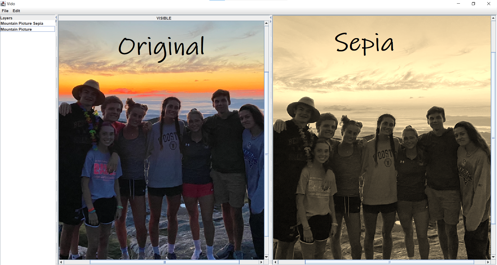
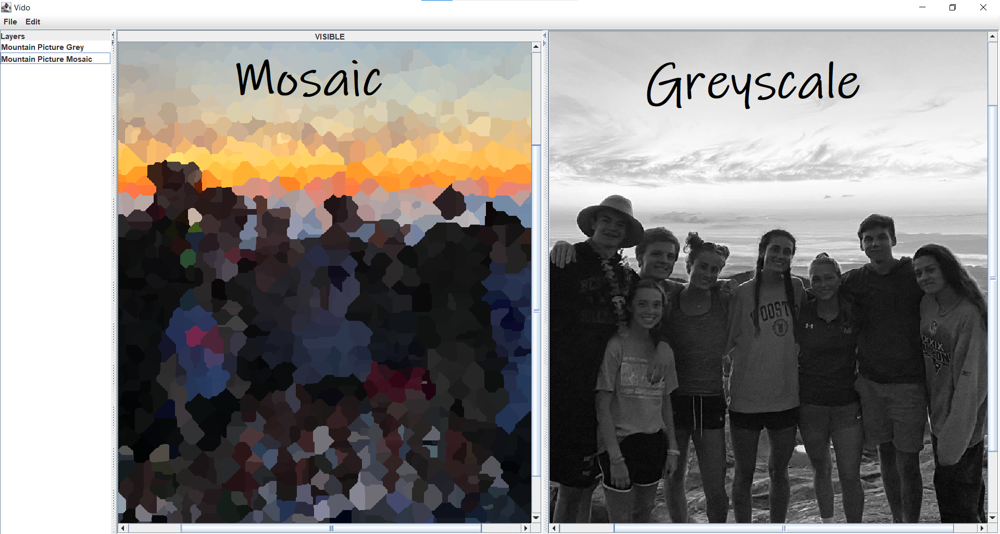
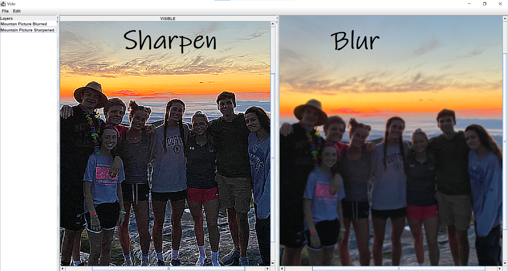

Vido - Image Processing GUI
  Vido is an image processing application that is available for use with command line inputs, typed scripts, and a GUI made with JFrame. This project was made in June of 2021, and consists entirely of Java code. In all forms, Vido is able to load images in the PPM, JPG, and PNG format into layers of an image, which can be set to be visible or invisible. Once in the project, Vido files can be edited with a number of modifications, all of which are shown in the image above. Once a project is finished, the files can be saved in any of formats listed above, or as a complete project, in a Vido specific format.
To check out this project, or run it for yourself, visit *PUT LINK HERE* and download the repo.